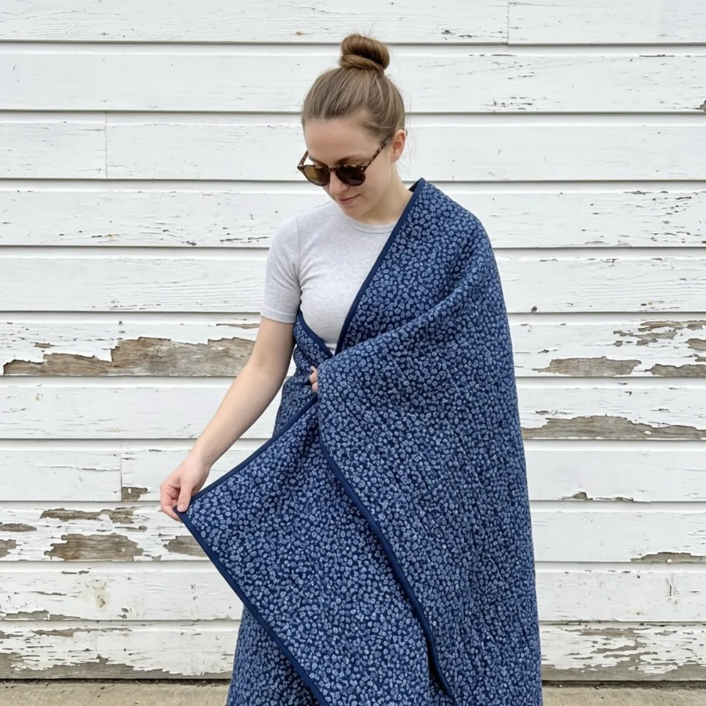
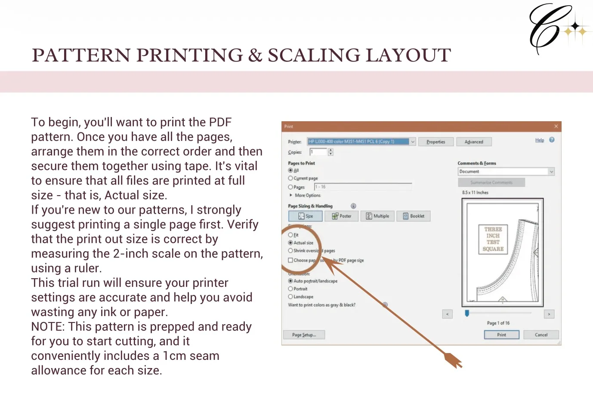
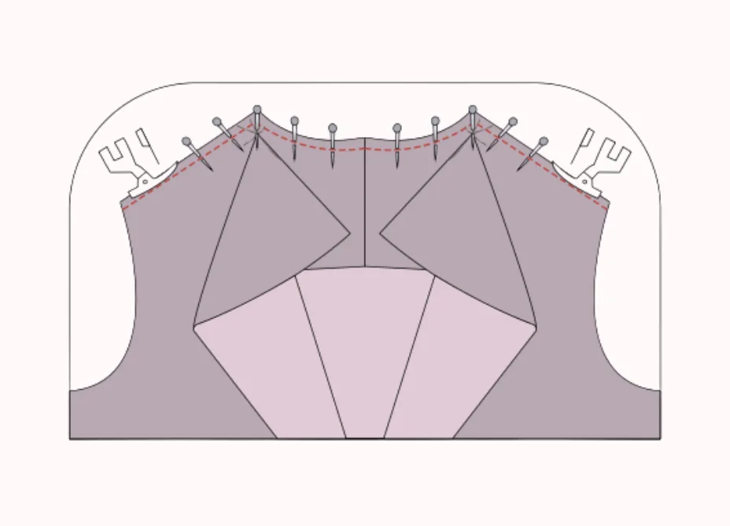
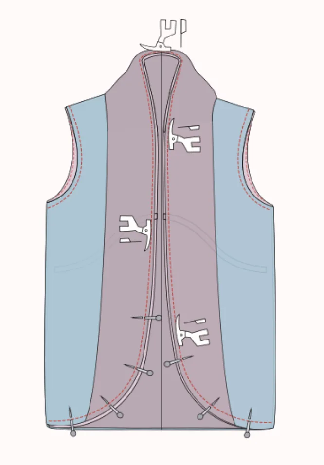
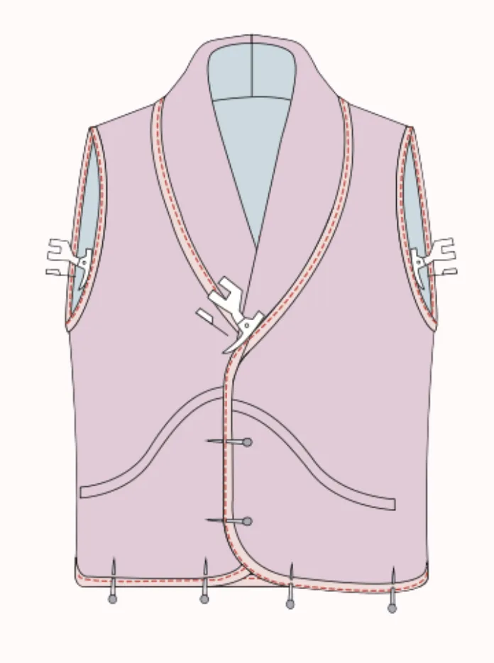
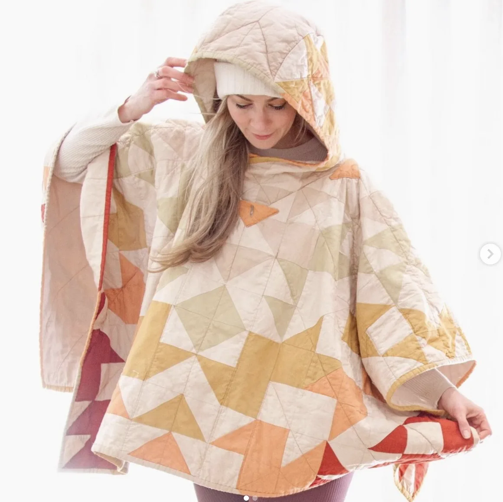
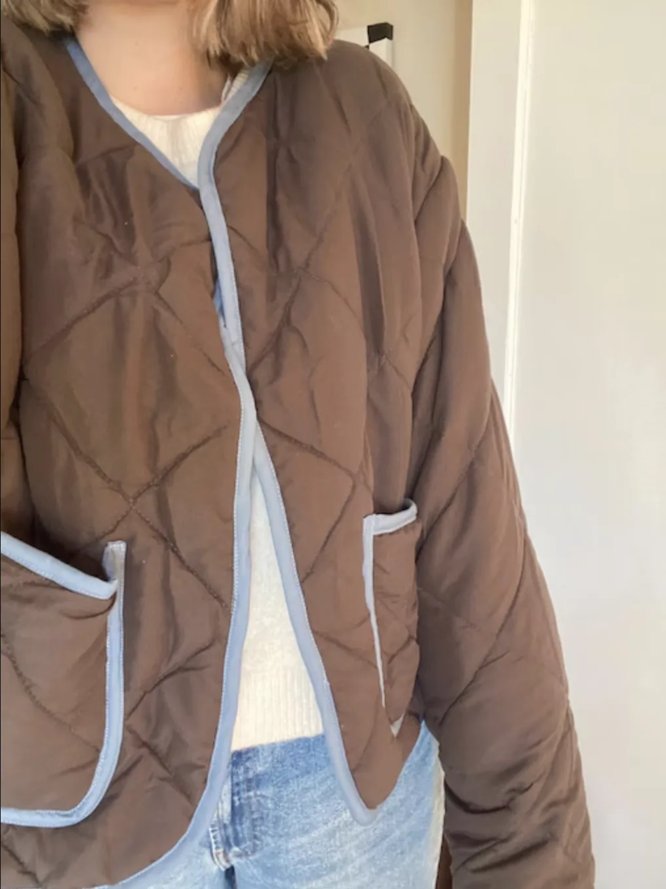
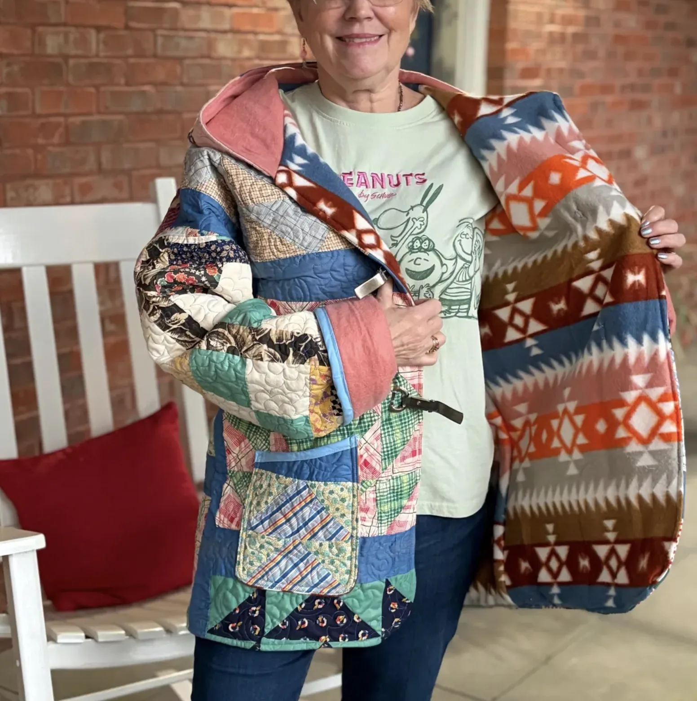

A vest that wraps, ties, and drapes — the Blossom Quilted Vest is the kind of layering piece you reach for without thinking. The shawl collar falls softly over the shoulders, the curved hem gives it a feminine finish, and the side tie lets you adjust the fit without compromising the silhouette. Layer it over a crisp button-up for polish or a simple tee for ease — four different fabric choices, four entirely different moods. This guide walks through the 8 core construction stages of this quilted vest sewing pattern; the full pattern includes every graded piece, the complete size chart from XXS to 5XL, and a detailed instruction booklet.
1 Choosing Fabric for a Quilted Wrap Vest: Pre-Quilted Options by Season
The Blossom Quilted Vest is designed for pre-quilted fabrics — materials that already have their quilting stitched in, so you get all the structure and warmth without any extra padding work. Each fabric choice transforms the vest's character completely, from a relaxed summer layer to a cosy winter staple.
Pre-Quilted Cotton is the everyday workhorse of this pattern. Breathable and lightly structured, it keeps the vest crisp through mild weather and makes the shawl collar lie cleanly without any extra support. It is the best choice if you want a versatile piece that works across spring, summer, and fall. Pre-Quilted Flannel is perfect for cooler days — it drapes beautifully while adding softness and warmth without bulk, giving the wrap vest a cosy, refined appeal that pairs naturally with denim and knitwear.
For colder weather, Pre-Quilted Sherpa or Fleece brings volume, comfort, and a plush finish that makes this vest look inviting and casual — ideal for layering over chunky jumpers. And for a more modern, sporty take, Pre-Quilted Nylon or Polyester delivers a lightweight, slightly glossy finish that is durable and transitional — perfect for outdoor or active-leaning styling while keeping the wrap silhouette looking intentional.

Pre-quilted cotton to sherpa — pick the fabric that suits your season and style
2 How to Print a Quilted Vest PDF Sewing Pattern at Home
Before picking up your scissors, you need your pattern pieces printed and ready. For this tutorial, we are using the LU2COHOUSE Blossom Quilted Vest Sewing Pattern — the exact pattern used to create the vest in this guide. Print at full size: set your PDF software to "Actual size" with no scaling applied. Always print the first page alone first and verify the 2-inch test square with a ruler before running all pages — this confirms your printer is not scaling down.
Open the PDF in Adobe Acrobat Reader and use the Layers panel on the right-hand side to hide the sizes you do not need. Deselecting unused size layers keeps the printed lines clean and easy to cut, saves ink, and makes the whole process much faster. The Blossom Quilted Vest pattern includes separate layers for every size from XXS through 5XL so you can print only what you need.

Set your printer to "Actual size" — then verify with the test square before printing all pages
3 How to Find Your Size in a Women's Wrap Vest Pattern
Because the Blossom Quilted Vest wraps and ties, fit is more forgiving than a structured jacket — but measuring correctly still matters for a great drape. Using a measuring tape, gently measure your bust, waist, and hips with the tape comfortably fitted, not too tight or too loose. Compare against the size chart included in the full pattern.
The LU2COHOUSE Blossom Quilted Vest pattern covers inclusive sizes from XXS through 5XL. If your measurements fall between two sizes, choose the larger one — the wrap design allows for easy adjustment at the tie, so a slightly relaxed fit only adds to the effortless character of the finished piece.
Sewing this exact look along with us?
While this tutorial covers the major milestones, the perfect wrap vest is all in the details.
To get the exact proportions, the inclusive size chart, and the full detailed instruction booklet, you will need the LU2COHOUSE Blossom Quilted Vest Sewing Pattern. Available as an INSTANT DOWNLOAD, it includes formats for A4 and US Letter so you can print right at home, along with A0 for large-scale print shops, ensuring you can start cutting right away. The pattern also includes separate layers for every size and size measurements in both cm & inches.


Tools you will need
How to read the illustrations
4 Constructing the Shawl Collar on the Blossom Quilted Vest
- Place the front lining on top of the front facing, right sides together, aligning the center lines carefully. Pin from top to bottom smoothing out any creases, sew along the pinned edge, and press the seam flat.
- Pin the two front main fabric pieces together along the top collar edges, right sides facing. Stitch along the pinned edge to form the collar shape.
- Attach the remaining collar section to the back neckline to create the smooth, continuous shawl collar shape. Press all seams open.
- Repeat the entire sequence with the lining front pieces so both the outer vest and lining have their collar sections fully assembled and pressed.

5 Attaching the Collar and Joining the Vest Side Seams
- Take the front and back pieces right sides together. Pin the back neckline of the collar to the back neckline of the garment, matching the center back seam precisely. Pin the shoulder and neck points, then pivot so the front and back shoulder seams line up cleanly.
- Tip: place a pin vertically at the small dot marking to prevent the collar from pulling at the corner as you sew. Starting at the center back, sew to the pivot point, drop the needle, pivot without catching fabric under the foot, and continue across the shoulder. Repeat for the other side.
- Repeat the entire collar attachment process with the front and back lining pieces so both layers are fully assembled.
- Pin the front and back vest pieces right sides together along the side seams, matching the underarm points and notches. Sew from the armhole down to the hem. Finish raw edges and press seams open. Repeat with the lining panels.

6 Making and Attaching the Side Ties on a Wrap Vest
- Fold each strap piece in half lengthwise with right sides together. Sew along the long folded edge and one short end using a 1 cm seam allowance.
- Attach a safety pin or bodkin to the sewn short end and carefully feed it through the tube to turn the strap right side out. Press thoroughly with an iron to flatten and sharpen the edges.
- Place the straps along the center front edge of the vest following the pattern placement markings. Topstitch through the middle of each strap at the marked position to secure them firmly to the vest body.

7 How to Line a Wrap Vest Using the Sandwich Method
- Place the lining on top of the main fabric panel, right sides together, aligning all edges carefully — collar, armholes, and bottom edges. Make sure the straps are tucked inward between the layers so they will be secured in the seam.
- Beginners: pin from the back neckline to the front collar and down to the bottom, leaving the back hem open for turning. Experienced sewers: pin all the way around — down the front, around the armholes, and to the back — leaving one opening for turning.
- Sew along all pinned edges including the armholes. Trim and finish the seams as needed, then turn the vest right side out.
- Neatly fold the collar to shape the shawl and press carefully to set the drape for a smooth, professional finish on the right side.

8 How to Finish a Quilted Vest with Bias Binding
- Measure the full length of the vest's front opening, collar, hemline, and both armholes. Add these together to get your total bias band length, plus a little extra for safety.
- Open one folded edge of the bias band and align its raw edge with the raw edges of the vest all the way around — collar, front opening, hemline, and armholes. Pin or clip carefully in place.
- Sew along the crease of the opened bias band to attach it securely.
- Fold the bias band over the raw edges to the inside, encasing them neatly. Pin in place and topstitch close to the folded edge to secure both layers. Press thoroughly for a smooth, crisp finish.

Ready to Sew Your Own Quilted Wrap Vest?
A wrap vest you sewed yourself changes how you reach for it — every time you tie that bow, you know exactly how it came together.
This guide covers the key milestones — the full Blossom Quilted Vest pattern takes you all the way. Your instant download includes every graded piece from XXS to 5XL, the complete shawl collar and strap templates, and a step-by-step instruction booklet sized for both home printers and print shops. Download today and start cutting.
What you will receive with the Blossom Quilted Vest Pattern:
- PDF sewing pattern — sizes XXS through 5XL
- US Letter printable pattern for home printers
- A4 printable pattern
- A0 printable pattern for large-scale print shops
- Separate layers for every size — easy to print only your size
- Size measurements in both cm & inches
- The complete detailed instruction booklet
- Instant digital access — no waiting!

[ Made by our community ]
What Sewers Made with our sewing Patterns




Want to explore more womens jacket patterns and vest sewing patterns? We have a massive collection of beginner-friendly clothing patterns tailored for every style!
[ Related Guides ]

Terms of Use: All digital patterns, tutorials, and designs are for personal use only. Unauthorized commercial reproduction or distribution of any pattern or resulting garments is strictly prohibited to protect original designs.